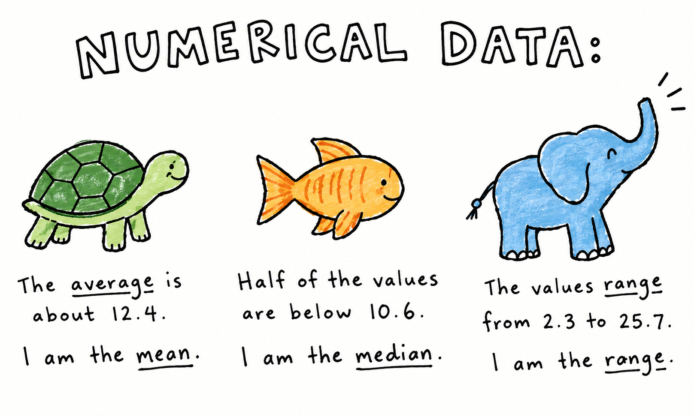
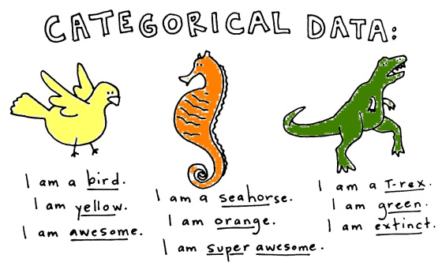
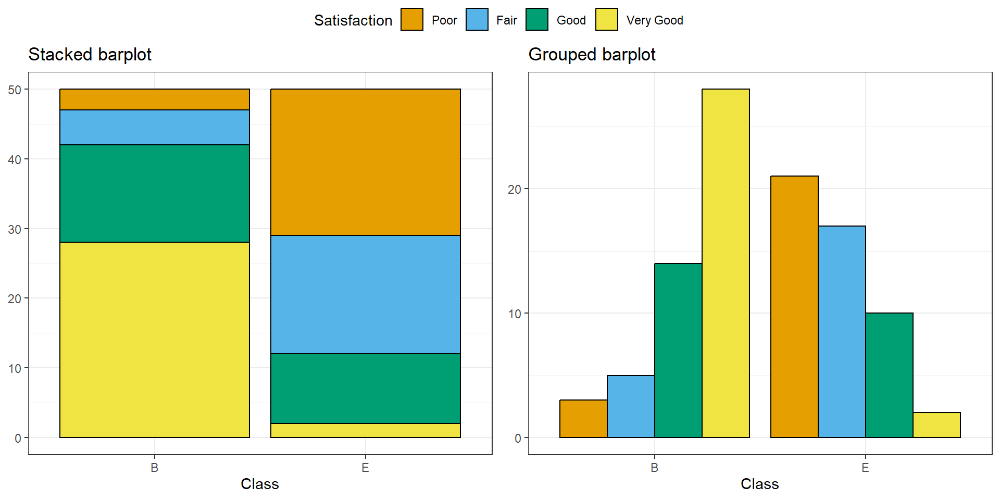
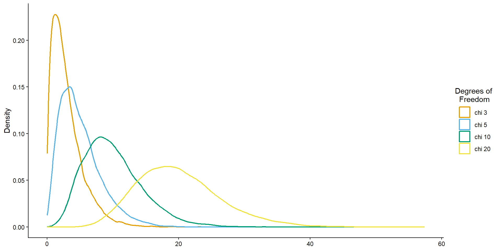
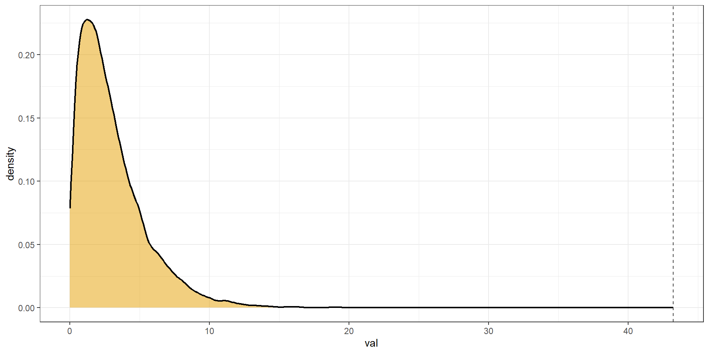

| Class | Satisfaction |
|---|---|
| B | Very Good |
| B | Fair |
| B | Very Good |
| B | Very Good |
| E | Good |
| B | Good |
ST201 - Data analysis
Last week we covered
Check in: Was there anything from last week that was confusing or unclear?
Today we will learn how to:
Imagine we surveyed 100 airline passengers.
We recorded:
Research question: Is satisfaction related to travel class?


| Class | Satisfaction |
|---|---|
| B | Very Good |
| B | Fair |
| B | Very Good |
| B | Very Good |
| E | Good |
| B | Good |
Both of these variables are categorical
How would we analyse such data?
A contingency table shows the frequency of observations for every combination of categorical variables.
| Class | Poor | Fair | Good | Very Good |
|---|---|---|---|---|
| B | 3 | 5 | 14 | 28 |
| E | 21 | 17 | 10 | 2 |
A contingency table lets us see the joint distribution of two categorical variables.
A contingency table shows the frequency of observations for every combination of categorical variables.
| Class | Poor | Fair | Good | Very Good |
|---|---|---|---|---|
| B | 3 | 5 | 14 | 28 |
| E | 21 | 17 | 10 | 2 |
A contingency table lets us see the joint distribution of two categorical variables.
Marginal distributions tell us:
How common is each category, ignoring the other category?
What proportion of all passengers reported “Very Good” satisfaction?
What proportion of passengers travelled in Business class?
Conditional distributions tell us:
What proportion of each class gave each satisfaction rating?
Out of all the people in Class B, how many people were very satisfied?
Out of all the people in Class E, how many people were fairly satisfied?
Essentially, we are ignoring the other group
Marginal distribution
\[ \frac{\text{Very good passengers}}{\text{All passengers}} \]
Conditional distribution
\[ \frac{\text{Very good business passengers}}{\text{All business passengers}} \]
conditional.r
# There are two ways to achieve this
# METHOD 1 - CALCULATING MANUALLY ----------------------------------------------
tab <- table(airlines)
# The probability of satisfaction conditional on Business class
# The first row divided by the sum of the first row
cond_prob_B <- tab[1, ] / sum(tab[1, ])
# The probability of satisfaction conditional on Economy class
# The second row divided by the sum of the second row
cond_prob_E <- tab[2, ] / sum(tab[2, ])
# METHOD 2 - LET R DO IT FOR YOU -----------------------------------------------
tab <- table(airlines)
prop.table(tab, margin = 1)| Class | Poor | Fair | Good | Very Good |
|---|---|---|---|---|
| B | 0.06 | 0.10 | 0.28 | 0.56 |
| E | 0.42 | 0.34 | 0.20 | 0.04 |

Which plot does a better job of answering the research question
Does satisfaction differs between classes?
barplots.R
# How to make the bar plots (colours are omitted as I used a slightly different method)
tab <- table(airline) # Make a contingency table
# STACKED BARPLOT
barplot(
t(tab),
legend = TRUE,
args.legend = list(x = "top", ncol = 2),
ylim = c(0,95)
)
# GROUPED BARPLOT
barplot(
t(tab),
beside = TRUE, # This argument is the key difference
legend = TRUE,
args.legend = list(x = "topleft", ncol = 1),
ylim = c(0,40)
)What would we see if class didn’t matter?
Let’s say that 15% of all passengers report “Poor” satisfaction.
If travel class has nothing to do with satisfaction, what percentage of Business passengers should we expect to report poor satisfaction?
15%
And what about in Economy class?
15%
Independence
Two categorical variables are independent when knowing the category of one variable gives us no information about the category of the other.
If Class and Satisfaction were independent, the distribution of satisfaction should be the same in Business and Economy.
| Class | Poor | Fair | Good | Very Good |
|---|---|---|---|---|
| B | 3 | 5 | 14 | 28 |
| E | 21 | 17 | 10 | 2 |
What would out airline data look like if class had no effect on satisfaction
\[ E_{ij} = \frac{(\text{Row}_i \; \text{total}) \times \text{(Column}_j \; \text{total)}}{\text{Grand total}} \]
| Class | Poor | Fair | Good | Very Good |
|---|---|---|---|---|
| B | 12 | 11 | 12 | 15 |
| E | 12 | 11 | 12 | 15 |
What actually happened
| Class | Poor | Fair | Good | Very Good |
|---|---|---|---|---|
| B | 3 | 5 | 14 | 28 |
| E | 21 | 17 | 10 | 2 |
If independence was assumed
| Class | Poor | Fair | Good | Very Good |
|---|---|---|---|---|
| B | 12 | 11 | 12 | 15 |
| E | 12 | 11 | 12 | 15 |
We need a single number that summarises how different our observed counts are from the counts we’d expect under independence.
\[ \chi^2 = \sum_i \sum_j \frac{(O_{ij} - E_{ij})^2}{E_{ij}} \]
Larger \(\chi^2\) values indicate greater disagreement between observed and expected counts.
How do we determine what is a large \(\chi^2\) value?
The \(\chi^2\) test statistic has a mathematical distribution called the
\(\chi^2\) distribution.

How many cells can vary freely once the totals are fixed?
Once you know the row \((R)\) and column \((C)\) totals, not every cell can vary independently.
\[ DF = (R - 1)(C - 1) \]
Looking back at our airline example, we had 2 rows and 4 columns
\[ DF = (2 - 1)(4 - 1) = 3 \]
Once we have a research question, we can do a hypothesis test.
Is airline class associated with satisfaction?
Null hypothesis
Class and satisfaction are independent.
Alternative hypothesis
Class and satisfaction are associated.
If the null hypothesis were true, how surprising would our observed table be?
Pearson's Chi-squared test
data: tab
X-squared = 43.245, df = 3, p-value = 2.183e-09
We found evidence of an association between travel class and satisfaction.
Satisfaction differs between Business and Economy passengers.
Association does not automatically imply causation.
We have not demonstrated that changing someone’s travel class would cause their satisfaction to change.
Recommended reading
Chapters 4 and 5 of Introduction to Statistical and Data Analysis by Christian Heimann & Michael Schomaker Shalabh